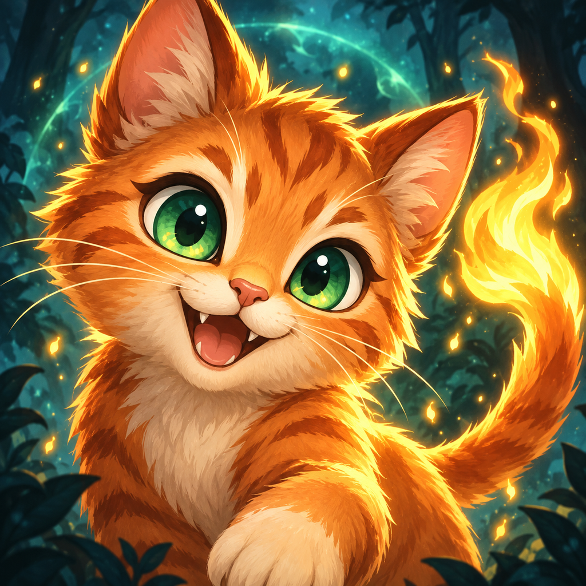

Small companions. Extraordinary journeys.
Veilborn
Collect magical companions, evolve your team and explore beyond the veil.
How can we help?
Veilborn is currently in testing on Android and iOS. Tell us about bugs, missing purchases, or feedback for your journey.
Report a problem
Include your device model, operating-system version, Veilborn version and build number, and the steps that reproduce the problem. A screenshot helps when something looks wrong.
For a purchase issue, include the product name and Apple or Google order reference. Please do not send passwords, payment-card details or full purchase receipts.
Restore purchases
Open The Bazaar and tap Restore purchases. Use the same Apple or Google account that made the purchase. Permanent purchases can be restored. Spent Glints and other consumed items cannot be restored by the store.
Your saved game
Progress is saved on your device. Veilborn currently has no account system or cloud-save feature. Clearing app data or deleting the app can remove your progress. Avoid doing either when troubleshooting a purchase; contact support first.
Optional purchases
Veilborn offers Glints, creature bundles and XP boosts through the platform store. The 30-day Double XP Pass is a one-time purchase that adds 30 days; it does not renew automatically. Purchases are optional.